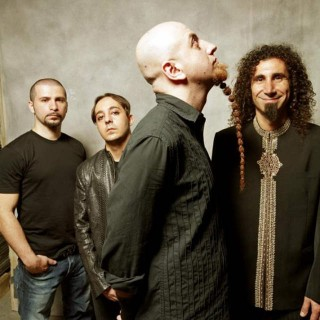
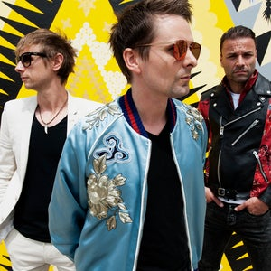

1. System Of A Down
System of a Down (parfois abrégé en SOAD) est un groupe de rock américain, originaire de Californie.

2. Muse
Muse est un groupe de rock britannique, originaire de Teignmouth, dans le Devon, en Angleterre.
3. Aiden
Aiden est un groupe de punk rock américain, originaire de Seattle, Washington. Formé en 2003, le groupe se composait de William Francis, Jake Wambold, Jake Davison, Nick Wiggins et Angel Ibarra.

4. The Beatles
The Beatles est un groupe musical britannique, originaire de Liverpool, en Angleterre. Formé en 1960, et composé de John Lennon, Paul McCartney, George Harrison et Ringo Starr.